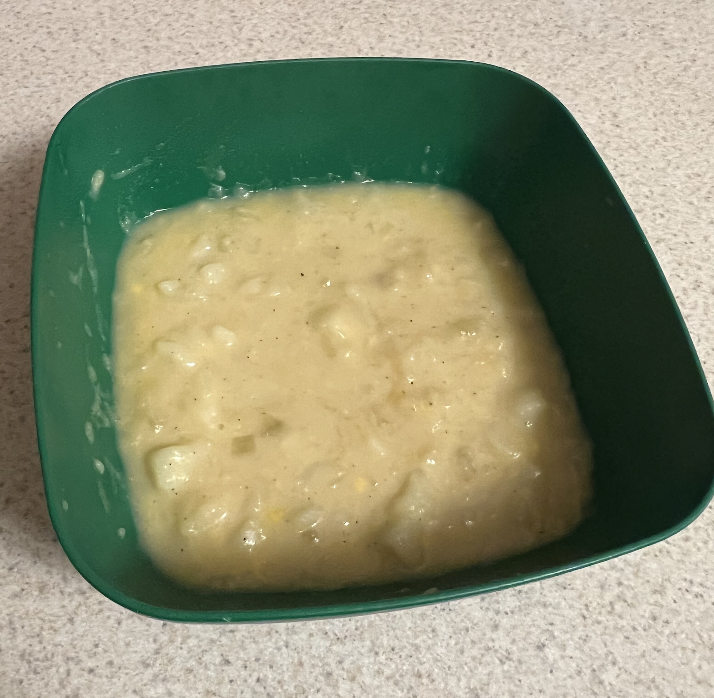

Test out different recipes to see which ones you like.
Eating solo? Cut the recipe in half. Have a group of friends
getting together? Make a full batch or even double the batch.
It's that easy!
Try a Recipe!

Enchiladas
- 1 - 10.5 oz. can cream of chicken soup
- 1 - 8 oz. can tomato sauce
- 1 - 7 ¾ oz. can El Pato tomato sauce (red)
- 10 flour tortillas (burrito-size)
- 1 - 2 lb. chicken, cooked and shredded Cheese Olives
- Green onions
- 1. Preheat oven to 350°F.
- 2. Mix soup and sauces. Spread some on the bottom of a 9 x 13" pan.
- 3. Lay out 10 tortillas on the counter. Spread some sauce on the center (diameter) of each tortilla. Add chicken and cheese to center and top with another spoonful of sauce.
- 4. Fold then roll tortillas and place in pan.
- Top with sauce and cheese, olives, green onions.
- 5. Bake for 20 minutes.

Potato Soup
- 8 - 10 potatoes, peeled, diced
- 2 T dried onion
- 2 stalks celery, chopped in food processor
- 2 tsp. salt
- ½ tsp. pepper
- 1 C = ½ pint whipping cream (milk works great too)
- 3 ½ C grated cheddar cheese
- Keebler Club Crackers
- 1. Cover potatoes, celery, onion, salt, and pepper with enough water to keep from burning, but not so much that you'll need to drain.
- 2. Boil for 25 min. Let it get a little mushy. Reduce heat to medium.
- 3. Add whipping cream and stir, break potatoes against side of pan until of desired consistency.
- 4. Add cheese, stir until melted. Serve with Keebler Club Crackers.
- *In a slow cooker: cook on high 3 - 4 hrs. then break potatoes and add cream and cheese.

Chicken Celery Salad
- 1 - 2 Ibs. chicken, cooked and shredded
- 1lb. pkg. mini bowtie pasta (mini farfalle)
- 3 stalks celery, chopped
- ¾ C Miracle whip light
- 1 tsp. salt
- ¼ tsp. pepper
- Celery salt to taste Dill weed to taste
- 1. Prepare chicken in Crock-Pot or boil on stovetop. Shred.
- 2. Boil water. Cook noodles for 8 min. Drain.
- 3. In large bowl combine chicken, noodles, and celery. Add a little Miracle Whip so the noodles don't stick together. Add salt and pepper.
- 4. Generously sprinkle celery salt and dill weed. Stir and chill in refrigerator.
- 5. Before serving, add more Miracle Whip and seasonings to taste. Serve cold.

Macasagna
- 1 ½ - 2 C macaroni noodles
- 1 lb. ground beef, cooked
- 1 T dry chopped onion
- ¼ tsp. garlic powder
- 24 - 32 oz. tomato sauce
- ¼ tsp. oregano
- ¼ tsp. pepper
- ½ tsp. salt
- 1 T parsley
- 1 ½ tsp. basil
- 15 - 16 oz. ricotta cheese (cottage cheese)
- 1 lb. Colby-Jack cheese, grated
- 1. Preheat oven to 375°F. Cook beef with onion, drain fat, add garlic.
- 2. In small bowl combine tomato sauce, oregano, pepper, parsley, and basil.
- 3. Prepare noodles in boiling water according to package directions. Drain.
- 10 - 12min
- 4. Grease a 9 x 13" pan. Put noodles, meat, sauce, ricotta cheese, and ½2 of the grated cheese in pan and mix well. Sprinkle top with remaining cheese.
- 5. Bake for 25 - 30 minutes until done.
- *All can be combined in large pot & kept warm, then sprinkle cheese on individual plates. If you don't have time to bake, then the pot thing works.

Sloppy Joes
- Cook together:
- -- 1 lb. ground beef
- ¼ Conion or 1 T. dry chopped
- 1 small jalapeño, chopped (or ¼ C green bell pepper)
- 2-3 stalks celery, chopped
- 2 cloves garlic, chopped* --
- Drain liquids and add:
- -- 1 tsp. prepared yellow mustard
- ¾ C ketchup
- 3 tsp. brown sugar = 1T --
- Salt and pepper to taste
- Serve on buns, bread, or with crackers.
- Green beans are a great side dish...
- *If substituting garlic powder for fresh cloves, add after the meat is cooked.

Peanut Butter Blossoms
- Ingredients:
- 3 ½ dozen milk chocolate kisses
- ¼ 4 C sugar for coating
- Group #1:
- ½ C butter, softened
- ½ C creamy peanut butter
- ½2 C brown sugar
- ¼ C granulated sugar
- 1 tsp. vanilla
- 1 egg
- Group #2:
- 1 ½ C flour
- ½ 2 tsp. salt
- ¾ tsp. baking soda
- ½ tsp. baking powder
- 1. Preheat oven to 375°F. Unwrap kisses.
- 2. Beat together group #1.
- 3. Stir in group #2.
- 4. Shape dough into 1" balls. Roll in sugar and place on ungreased cookie sheet.
- 5. Bake 8 minutes. Immediately press a kiss into the center of each cookie. Let sit 3 - 5 minutes before placing on a wire rack to cool completely.
- Makes 3 ½ dozen.

Peanut Butter Pie
- Oreo Crust:
- 1 - 140z. package Oreo cookies
- 5 T butter, melted
- - Pulse the cookies in a blender/food processor until fine crumbs are formed. Set aside 1-2 T for sprinkling on top later. Add butter and mix to combine. Press into a 10-inch pie pan. Refrigerate.
- Filling:
- 1 C creamy peanut butter
- 1 Csugar or 4C powdered sugar
- 8 ounces cream cheese, softened
- 8 ounces whipped topping (Cool Whip)
- - Mix peanut butter and sugar. Add cream cheese and mix until smooth. Fold in whipped topping.
- Pour into crust, smooth it out, and refrigerate 3-4 hours until solid.
- Sprinkle reserved crumbs on top before you slice and serve.

Ginger Snap Cookies
- Cream:
- ¾ C butter, softened (1 ½ sticks)
- 1 C sugar
- Mix in:
- 1 egg
- ¼ C molasses
- Stir in combined:
- ¼ tsp. salt
- 2 tsp. baking soda
- 1 tsp. ground cinnamon
- 1 tsp. ground cloves
- 1 tsp. ground ginger
- 2 ½ C flour
- 1. Preheat oven to 375°F. Cream, mix in, and stir ingredients as listed.
- 2. Shape dough into small balls on baking sheet.
- Press gently and sprinkle with sugar.
- 3. Bake for 8 minutes. Sprinkle with sugar upon removal from oven.
- 4. Wait 3 - 5 minutes before moving to wire rack to cool completely.
- 5. Makes just over 4-dozen, 2 ¼" cookies.